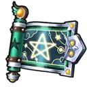

Meteoro da Lilu
Feitiço · Tier 14 · Nível 43
A pesquisa de Lilu rendeu este poderoso feitiço, capaz de puxar um meteorito perdido e jogá-lo contra a terra. Somente para especialistas; erros podem ter consequências terríveis!
Atributos
Ataque
1.890
Vida
65
Economia
Valor
12.500.000
Tempo de fabricação
2d 14h
XP do comerciante
320.000
Trabalhadores: Feiticeiro 37, Herborista 33, Carpinteiro 30
Receita


Marcos do projeto
4
-12 Éter
10
-86 Ferro
18
Valor +25%
25
-1 Tecido Astral
40
Chance de qualidade +1